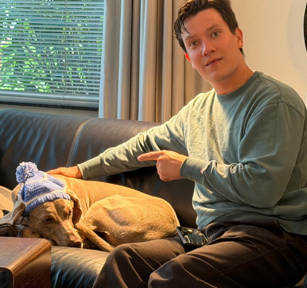
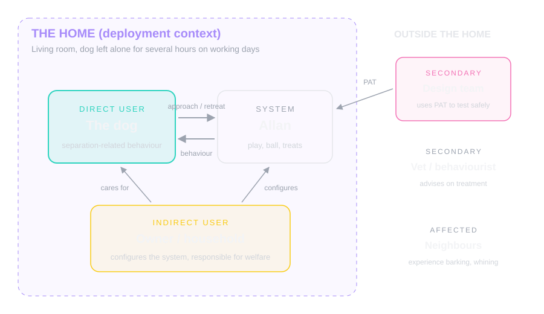

Group 1: Pet Anxiety Toolkit
Case description, design tools, and functional breakdown for modular robotic companion.
Case Description
Domestic pets (e.g., cats & dogs) often experience stress and separation anxiety when left alone [1]. While interactive toys exist, the effectiveness of these solutions varies per individual animal; a motion that is engaging for one might be terrifying for another [2]. This makes designing an effective robot companion challenging.
The problem is also close to home for me. My own dog Kato had separation anxiety, so I have seen first hand how real this issue is and what it does to a dog and the people around it (Figure 1).

Figure 1: Me and Kato (with a hat I crochet for her). She deals often with seperation anxiety.
To solve this design gap, this project tries to focus on developing a modular pet companion toolkit. Rather than a single, static robot, we design a hardware and software setup that allows designers and pet owners to rapidly prototype, test and change according to the preferences of each individual pet. Swapping physical modules, like a treat dispenser, a laser pointer, or a mechanical arm to throw balls, facilitates iterative testing. The goal is to discover the best combination of play and mechanics to effectively reduce pet anxiety.
To make it concrete we pictured a specific situation: a young rescue dog in a normal Dutch family home, left alone in the living room for about six hours on office days. The owners come home to chewed furniture and notes from the neighbours about barking. Toys and a food puzzle did not fix it, and a dog sitter every day is too expensive. That is the point where something like our toolkit becomes interesting. Figure 2 shows who is involved in this case.

Figure 2: The stakeholders around the case. The dog is the direct user, the owner and household are indirect users, and the design team works with the system rather than in the home itself.
Research Question: How can a modular robotic design toolkit enable designers and pet owners to rapidly prototype interactions to help alleviate anxiety behaviours for domestic pets?
Design Tools
Puppeteering
The Method: Testing a product's behaviour by simulating it manually.
Application to problem: Before actually making the toolkit and having to decide on speed and the best module applications, construct a low-fidelity version of our robot, attach the modules, and try it out. This allows for quick iteration and is easy to edit.
What we might learn: This part of the design process can help us identify which modules are exciting for the animals and are perceived as play, while other modules could be used to reduce anxiety or loneliness. Certain jerky movements, smells, or shapes can scare the animals. This design method can help find the sweet spot in interactions and engagement, defining the parameters and specifications of the final hardware and software. It also reduces the research time needed and lowers costs. Play methods are translated into actual mechanical design.
Hackathon
The Method: An intensive, timed collaborative event where multidisciplinary research teams rapidly ideate and prototype solutions to our challenge.
Application to problem: Organise a short, one-day event focused on designing a product for animal anxiety reduction and entertainment. Invite peers at the University of Twente, such as design experts and other animal enthusiasts who want to participate, and provide them with all the tools and sensors they need to create a toolkit, challenging them to prototype a module that helps animals feel safe or relaxed.
What we might learn: By observing how other designers and experts tackle this issue and build solutions, we can identify the obvious physical and technical pitfalls in designing for pets, such as issues with durability, scale, and movement. It may also generate a wide range of ideas for our modules that we might not have considered on our own. Furthermore, it allows us to test the toolkit itself and see how intuitive it is and what is missing.
(Online) Cohort Analysis
The Method: A qualitative and quantitative research approach that groups subjects based on shared characteristics to identify patterns.
Application to problem: Engage with and research subsets of pet owners through online forums, networks, or surveys who actively deal with issues like separation anxiety. Segment these cohorts based on variables such as pet background and context (e.g., rescue or raised from birth) or the type of anxiety the animal shows, and analyse how owners currently cope with this issue.
What we might learn: This method helps support our assumptions with data and real experiences from owners. We can learn exactly how owners currently support their anxious pets and what triggers their distress. Mapping observed behaviours to specific interventions we can deploy helps determine the foundations of our modules.
Mind Map
To map out the problem space we made a mind map (Figure 3), covering possible stimuli, play forms, sensing options and risks around the anxious pet.

Figure 3: Mind map of the problem space, exploring how we can design for pet interaction.
Building Blocks & Functional Breakdown
Main Platform
- Controlled base from class robot: A sturdy chassis with lights and speakers
- Microcontroller: Arduino/Raspberry Pi to control the modular attachments
- Actuators: Servos and maybe an open-source arm structure (SO-ARM100) to manipulate object and toys
- Power supply: High-capacity battery pack safely enclosed (No chewing in batteries!)
Module Examples
- Arm/Kinetic movement (or just something simple for the tail or a laser pointer)
- Audio/Visual modules for entertainment or copying/mirroring the pet
- Reward module: Automatic controllable treat-dispenser
Sensor Input
- Microphone: To detect interactions (e.g., barking and/or purring)
- Proximity sensor: To detect when an animal approaches the robot
- Vision: A camera to detect the animal, toys or other objects
Experimental Approach
To help actualise and map the encounter between the animal and the robot/technology, we will conduct a live play session using a domestic cat (played by Maurits) and a robot (played by Gijs). The team members will use a physical proxy (e.g., a cardboard cutout of a robot and a cat onesie) to intentionally restrict movement or speed, creating a more accurate representation of the interaction by simulating behaviour closer to the physical limitations. The rest of the team will support this play session using live music, camerawork for later research, and a live audience.
Figure 4 is an example of how our actor would portray a seal.

Figure 4: Seal (left), Maurits (right), showing his best acting skills as a physical proxy for the seal (award-winning).
Design Slide: PETs Framework
Figure 5 is the design slide we made to summarise the case.

Figure 5: Design slide with the PETs framing of the case.
Background Reading
For the case we also collected literature to back up our assumptions. Most of this reading happened later in the course during the in-depth assignment, but it fits best here with the case.
Ogata [1] gives an overview of what we actually know about separation anxiety in dogs. It is one of the most common behaviour problems, the causes are not fully understood, and treatment is usually a combination of behaviour therapy, changes at home and sometimes medication. There is no standard fix that works for every dog, which supports our idea of a toolkit instead of one fixed robot. Lenkei et al. [2] looked at where the behaviour comes from and found that it links to different underlying emotions, one dog is genuinely afraid while another is mostly frustrated or panicking. That matters for us because a robot response that calms a scared dog is not automatically the right response for a frustrated one, so the robot needs more than one strategy. Sargisson [3] reviews the actual treatments, mostly gradual desensitisation and counterconditioning, and makes clear the owner does the work over weeks. So the robot should support that process and not pretend to replace it.
On the ACI side Mancini [4] wrote the manifesto that basically started the field, arguing animals are real users of technology and should be designed for as users, not as objects the technology happens to point at. For us that means the dog's experience comes first and not what the owner wants. Her later paper [5] works this out into ethics: interactions should be worth it for the animal itself and it should always be able to walk away. This is where our thinking about stop conditions and escape routes comes from. Hirskyj-Douglas et al. [6] reviewed seven years of ACI work and show the whole range of technology already used with animals, screens, wearables, tangibles, haptics. Useful as a catalogue for our modules, and it fits the modular approach in general. The DogPhone project [7] built a ball that lets a dog literally call its owner via video. Half of the calls were probably accidental, but it is a nice example of giving the animal control instead of only receiving technology. Cat Royale [8] put a robot arm in a designed environment with three cats for twelve days, and their main lesson is that you design the whole world around the robot, hiding spots, viewing spots, choices, not just the robot. Zamansky et al. [9] measured how anxious dogs move around a robot compared to relaxed dogs, more erratic movement, keeping distance. That tells us movement is the thing to watch once we start testing. And Fong et al. [10] is the classic survey of socially interactive robots, useful as general grounding for what makes a robot read as social at all.
Reflection
This first session was a great experience to get to know each other and discuss this topic from people with many different backgrounds and ideas. We landed on a case and idea that we could all appreciate and have fun with, designing the slide and the mindmap. During this session I was generally busy with writing the agenda, the notes, and wrote out the entire document the group used. The tools from the later sessions all get applied to this case, starting with the scenario design session.
References
- Ogata, N. (2016). Separation anxiety in dogs: What progress has been made in our understanding of the most common behavioral problems in dogs? Journal of Veterinary Behavior, 16, 28-35.
- Lenkei, R., Faragó, T., Bakos, V., & Pongrácz, P. (2021). Separation-related behavior of dogs shows association with their reactions to everyday situations that may elicit frustration or fear. Scientific Reports, 11, Article 19207.
- Sargisson, R. J. (2014). Canine separation anxiety: Strategies for treatment and management. Veterinary Medicine: Research and Reports, 5, 143-151.
- Mancini, C. (2011). Animal-computer interaction: A manifesto. Interactions, 18(4), 69-73.
- Mancini, C. (2017). Towards an animal-centred ethics for Animal-Computer Interaction. International Journal of Human-Computer Studies, 98, 221-233.
- Hirskyj-Douglas, I., Pons, P., Read, J. C., & Jaen, J. (2018). Seven years after the manifesto: Literature review and research directions for technologies in Animal-Computer Interaction. Multimodal Technologies and Interaction, 2(2), Article 30.
- Hirskyj-Douglas, I., Piitulainen, R., & Lucero, A. (2021). Forming the Dog Internet: Prototyping a dog-to-human video call device. Proceedings of the ACM on Human-Computer Interaction, 5(ISS), Article 494.
- Schneiders, E., Benford, S., Chamberlain, A., Mancini, C., et al. (2024). Designing multispecies worlds for robots, cats, and humans. In Proceedings of the 2024 CHI Conference on Human Factors in Computing Systems. ACM.
- Zamansky, A., Bleuer-Elsner, S., Masson, S., Amir, S., Magen, O., & Van der Linden, D. (2018). Effects of anxiety on canine movement in dog-robot interactions. Animal Behavior and Cognition, 5(4), 380-387.
- Fong, T., Nourbakhsh, I., & Dautenhahn, K. (2003). A survey of socially interactive robots. Robotics and Autonomous Systems, 42(3-4), 143-166.